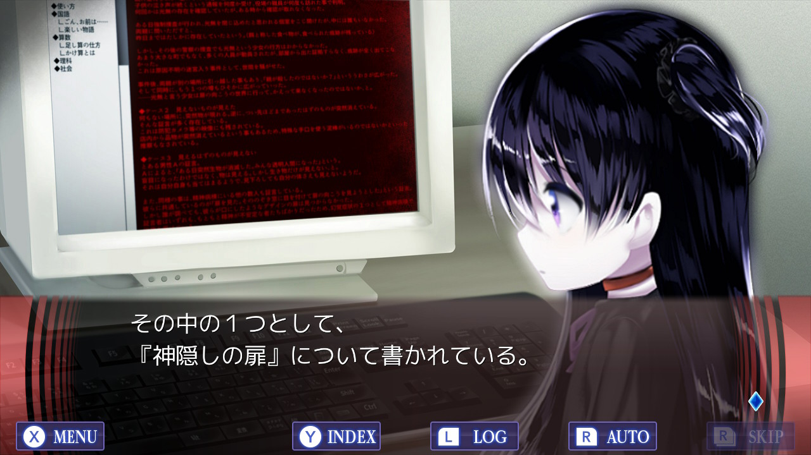
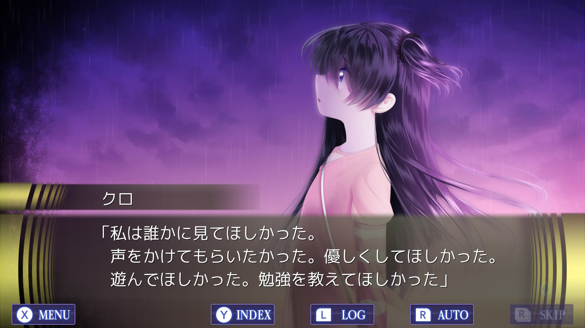
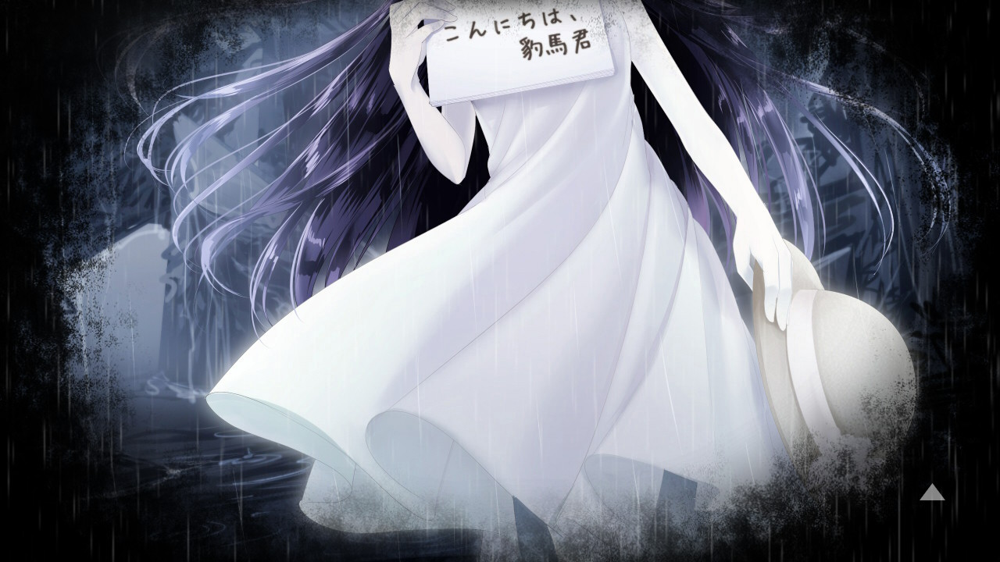

Saiaku Naru Saiyaku Ningen ni Sasagu - 最悪なる災厄人間に捧ぐ

Writer: R
Developer: Kemco & Water Phoenix
Vndb: https://vndb.org/v23077
First of all, I’d like to give props to Kemco for searching a new route and explore new ways to make VNs more relevant. Releasing huge games like Saiaku Naru Saiyaku Ningen ni Sasagu (sasasagu for friends) and Raging Loop for way cheaper than the usual game despite being way longer than most VNs released nowdays. It’s probably a considerable risk and it seems that it’s actually paying off, being cheaper, being on a multitude of consoles and of course being really fucking good have bring a lot of attention and positive comments, it makes me wonder if accessibility is the key to make VNs/eroge being popular and sell, in any case it feels kind of weird to go back to pay full price for a game after this two are only 3000 yen. Some slight setting and early game details ahead.
Kemco brought a new guy for their new proyect, R, a guy who made a couple of doujin ADVs and it seems they gave him full control to do his own thing, it seems a bit weird at first specially since they already have Amphibian there. I’m not sure how R’s past games fare in comparasion(from what I’ve gathered Issho ni Ikimashou seems kinda similar to sasasagu, but dmm’s anti gaijin system isn’t helping), but I guess Amphibian or whoever runs the ADV department at Kemco definitely liked them, and looking at the end result it seems he was spot on.
Sasasagu basically only has two characters and is about an eight years old kid called Hyouma who loses the ability to see and hear other living beings, he gets hospitalized and falls to a even deeper depression than he already was, until one day he meets Kuro, a 6 years girl who he can actually watch and hear, the system is somewhat complex since it involves dimensions and parallel worlds but it’s explained nicely so it isn’t very confuse. There’s a door that appears before some people under some circumstances and kind of interwines two dimensions, when a person looks through that door, his sight can only see people in that dimension, same for hearing and others. Hyouma heard and watched through that door so he can only touch, smell and taste other people, but can’t hear or watch them. Kuro on the other hand crossed completly the door so she can’t interact with any other human in any form, but she’s in kind of an special condition so she can still see and hear other living beings.

This system manages to make some cool and fitting presentation, one could say the game is full voiced but for most of the main game you can’t hear him since he can’t even hear his own voice. Also all the atmosphere and backgrounds feel empty since there aren’t any other humans there, it has some very well thought mechanics.
Altoguht, the SF or more like straight 怪奇 elements themselves are probably one of my mayor problems with the game, they seem to exist uniquely to advance the plot and explore the relationship between the protagonists, which is fair however some details feel too convenient or half-assed.
After meeting Kuro both her and Hyouma start tagging along and support through each other weakness, Hyouma can interact with other humans through Kuro and she can overcome her loneliness. The story also fastly advances through the years and has their relationship grow, since the game is pretty long(about 35-40 hours) and it only has two characters it allows to explore their entire relation to very far extremes. It goes through a lot of stages and much more than a romantic one or whatever, it’s truly a 二人きりの作品, kinda with an atmosphere from the 00s boy meets girl but more twisted.
Sasasagu in a way kinds of brings together the good parts of doujin games but still having the solidness and focus of commercial ones, it has themes that are more frequent in doujins like suicide, depression and the like. The writing itself is very frank and to the point to where it’s going thematically. The pacing is tight doesn’t have any of the problems like going in circles. Each scene has a purpose and the overall thing comes very well together, intense actions glue you to the screen, the atmosphere absorves you and there isn’t lost time with useless rondabouts. Coming from Raging Loop I’m sure the team at Kemco also made sure that wasn’t an issue.
I have to mention to that R besides the script also drew everything in the game, all cgs, tachie, backgrounds, and there is a lot, even though there is only Kuro there he made sure to have a lot of variations to show. He having full control of this also allows him to go crazy and show like 5-6 cgs in the same scene, not something you would really see in a normal game to use the resources like that, but it really makes for a special scene. In general there is a good contrast between doujin/commercial and show the strenght of both.
One of my pet peeves with the writing, or well plotting of the game in general is that at times it feels very predictable, not talking about the repeated content in a looping way since that aspect is actually very well planned, but more like since it does one thing for a world, it feels like it also needs to replicate for the other fours, and makes easy to see where things are heading for and feel somewhat stalled. That and that the story itself is taxing and tiresome by it’s nature makes it kind hard to go through sometimes.
In general I’d say game reminds me a lot to Mugen Renkan or even Takehaya’s games, how clear and straightforward the writing is and the construction of plot to explore the characters is similar.

After reading through 40 hours with the same heroine I have to say that Kuro is great, I doubt there are many games this long with a single heroine and still feel this fresh after so long, I guess the parallel world helps with this but still.
To end this I’ll remember to anyone to not miss the extra chapter since its easily the best part of the game, and again props to Kemco with this they pulled it off again, it’s obvious they want to make cool as hell titles and I hope they can keep delivering, it seems they have the perfect environment there. I still like Raging Loop quite a bit more since I’m a sucker for that kind of story, but sasasagu still very great game and wouldn’t even be surprise if people end up loving this one more.
